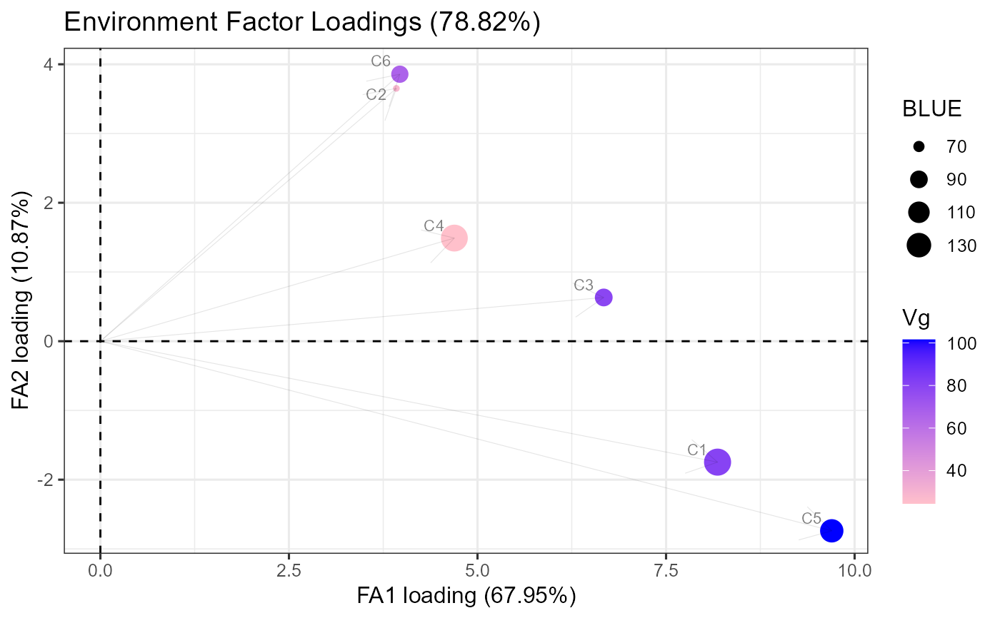

Factor Analytic Summary
Usage
fa_summary(
model = NULL,
trial = "trial",
genotype = "genotype",
BLUEs_trial = NULL,
mult_fa1 = -1,
mult_fa2 = 1,
filter_score = 1.5,
k_biplot = 1,
size_label_var = 2,
alpha_label_var = 0.2,
size_label_ind = 2,
alpha_label_ind = 0.8,
size_arrow = 0.2,
alpha_arrow = 0.2,
base_size = 12
)Arguments
- model
factor analytic model (asreml object)
- trial
string
- genotype
string
- BLUEs_trial
data.frame with trial BLUEs
- mult_fa1
c(1,-1) (-1 by default)
- mult_fa2
c(1,-1) (1 by default)
- filter_score
value to filter genotypes by the distance from the origin
- k_biplot
factor to multiply the scores in the biplot
- size_label_var
double
- alpha_label_var
(0,1)
- size_label_ind
double
- alpha_label_ind
(0,1)
- size_arrow
double
- alpha_arrow
(0,1)
- base_size
double
Value
list with loadings = L, loading_star, Gvar, Cmat, summary_loadings, paf_site, var_tot, scores, plots = list(loadings, biplot, biplot_scaled, loadings_c)
Examples
# \donttest{
library(dplyr)
#> Warning: package 'dplyr' was built under R version 4.1.3
#>
#> Attaching package: 'dplyr'
#> The following objects are masked from 'package:stats':
#>
#> filter, lag
#> The following objects are masked from 'package:base':
#>
#> intersect, setdiff, setequal, union
library(asreml)
#> Loading required package: Matrix
#> Warning: package 'Matrix' was built under R version 4.1.3
#> Online License checked out Tue Jan 31 15:05:54 2023
library(agridat)
data(besag.met)
dat <- besag.met
dat <- dat %>% arrange(county)
model <- asreml(
fixed = yield ~ 1 + county,
random = ~ fa(county, 2):gen + county:rep + diag(county):rep:block,
residual = ~ dsum(~ units | county),
data = dat,
na.action = list(x = "include", y = "include"),
trace = 0
)
#> Online License checked out Tue Jan 31 15:05:55 2023
#> Warning: Some components changed by more than 1% on the last iteration.
pp <- predict(model, classify = "county")$pvals
#> Warning: Some components changed by more than 1% on the last iteration.
fa_summary(
model = model,
trial = "county",
genotype = "gen",
BLUEs_trial = pp,
mult_fa1 = -1,
mult_fa2 = -1,
filter_score = 1,
k_biplot = 10,
size_label_var = 3,
alpha_label_var = 0.5,
size_label_ind = 3,
alpha_label_ind = 0.8,
size_arrow = 0.2,
alpha_arrow = 0.1
)
#> $loadings
#> fa1_loadings fa2_loadings
#> C1 6.638505 0.0000000
#> C2 4.767713 2.0708107
#> C3 7.337676 1.1270177
#> C4 5.054393 2.9298111
#> C5 9.046334 -0.3847117
#> C6 1.799477 5.4963343
#>
#> $loading_star
#> [,1] [,2]
#> C1 6.506894 -1.3153264
#> C2 5.083493 1.0851006
#> C3 7.415506 -0.3491831
#> C4 5.534688 1.8702694
#> C5 8.790761 -2.1694885
#> C6 2.852823 5.0308260
#>
#> $Gvar
#> C1 C2 C3 C4 C5 C6
#> C1 55.96770 31.65049 48.71120 33.55362 60.05414 11.94584
#> C2 31.65049 27.01935 37.31777 30.16498 42.33366 19.96126
#> C3 48.71120 37.31777 92.62335 40.38945 65.94549 19.39844
#> C4 33.55362 30.16498 40.38945 34.13068 44.59660 25.19848
#> C5 60.05414 42.33366 65.94549 44.59660 81.98417 14.16416
#> C6 11.94584 19.96126 19.39844 25.19848 14.16416 33.44781
#>
#> $Cmat
#> C1 C2 C3 C4 C5 C6
#> C1 1.0000000 0.8139061 0.6765499 0.7677116 0.8865622 0.2760985
#> C2 0.8139061 1.0000000 0.7459643 0.9933291 0.8994633 0.6639978
#> C3 0.6765499 0.7459643 1.0000000 0.7183485 0.7567629 0.3485161
#> C4 0.7677116 0.9933291 0.7183485 1.0000000 0.8430712 0.7457926
#> C5 0.8865622 0.8994633 0.7567629 0.8430712 1.0000000 0.2704843
#> C6 0.2760985 0.6639978 0.3485161 0.7457926 0.2704843 1.0000000
#>
#> $summary_loadings
#> site fa1 fa2 psi Vg BLUE fa1_scaled fa2_scaled
#> 1 C1 6.506894 -1.3153264 11.89795 55.96770 149.14477 0.8697712 -0.17581860
#> 2 C2 5.083493 1.0851006 0.00000 27.01935 56.06615 0.9779684 0.20875293
#> 3 C3 7.415506 -0.3491831 37.51170 92.62335 87.90316 0.7705140 -0.03628215
#> 4 C4 5.534688 1.8702694 0.00000 34.13068 144.62990 0.9473723 0.32013391
#> 5 C5 8.790761 -2.1694885 0.00000 81.98417 115.44192 0.9708709 -0.23960306
#> 6 C6 2.852823 5.0308260 0.00000 33.44781 87.64269 0.4932771 0.86987224
#>
#> $paf_site
#> fac_1 fac_2 all
#> C1 75.65019 3.0912180 78.74140
#> C2 95.64222 4.3577788 100.00000
#> C3 59.36918 0.1316394 59.50082
#> C4 89.75143 10.2485721 100.00000
#> C5 94.25904 5.7409626 100.00000
#> C6 24.33223 75.6677722 100.00000
#>
#> $var_tot
#> [1] 73.57 11.24
#>
#> $scores
#> Genotype fa1 fa2 distance_orig Score
#> 1 G01 0.20265374 0.81727785 0.8420283 0
#> 2 G02 0.13039048 0.35056451 0.3740283 0
#> 3 G03 -1.07587424 0.34266704 1.1291262 1
#> 4 G04 0.69046503 0.75651999 1.0242385 1
#> 5 G05 1.69717106 -0.15818095 1.7045266 1
#> 6 G06 -0.19627928 0.31999726 0.3753982 0
#> 7 G07 0.01880959 0.27169055 0.2723409 0
#> 8 G08 0.77615694 0.15910284 0.7922962 0
#> 9 G09 1.00511022 -1.22486508 1.5844687 1
#> 10 G10 -1.78566617 0.50471080 1.8556230 1
#> 11 G11 -0.36287003 -0.01019679 0.3630133 0
#> 12 G12 -1.27524229 0.63992795 1.4267974 1
#> 13 G13 0.06159272 0.85735546 0.8595650 0
#> 14 G14 0.42845051 0.16106522 0.4577246 0
#> 15 G15 0.59178318 -0.53430139 0.7972988 0
#> 16 G16 -0.11888991 0.94360026 0.9510606 0
#> 17 G17 0.35975959 0.03554595 0.3615114 0
#> 18 G18 -0.69233111 0.07849263 0.6967664 0
#> 19 G19 -0.15566146 0.07127722 0.1712044 0
#> 20 G20 0.47327839 -0.45688307 0.6578256 0
#> 21 G21 -0.42001366 0.07546218 0.4267388 0
#> 22 G22 0.99015310 0.45465918 1.0895495 1
#> 23 G23 -0.63371091 -0.33093101 0.7149160 0
#> 24 G24 -0.28814446 0.12981709 0.3160375 0
#> 25 G25 0.49649951 -0.98188155 1.1002741 1
#> 26 G26 0.15934102 -0.12119522 0.2001945 0
#> 27 G27 0.12828903 0.36244664 0.3844810 0
#> 28 G28 -0.21798722 -0.42126244 0.4743211 0
#> 29 G29 -1.81474812 -0.80749456 1.9862926 1
#> 30 G30 0.85642701 -0.54210387 1.0135797 1
#> 31 G31 -1.53523746 0.57413481 1.6390805 1
#> 32 G32 1.07722496 -0.36995652 1.1389826 1
#> 33 G33 -1.69735928 0.37655006 1.7386255 1
#> 34 G34 -1.78093130 -0.06627353 1.7821640 1
#> 35 G35 0.27903379 -0.38588257 0.4761987 0
#> 36 G36 0.60643639 1.27921164 1.4156792 1
#> 37 G37 -1.07911929 0.23788151 1.1050276 1
#> 38 G38 0.90160020 0.58417335 1.0743097 1
#> 39 G39 -0.31855438 0.07359146 0.3269443 0
#> 40 G40 0.55148818 -0.30036606 0.6279801 0
#> 41 G41 -0.32892664 -0.49824378 0.5970256 0
#> 42 G42 0.71147423 -1.01585705 1.2402262 1
#> 43 G43 -0.32602224 0.26586643 0.4206845 0
#> 44 G44 -0.64542257 -0.17473328 0.6686569 0
#> 45 G45 1.29690163 -0.66429458 1.4571346 1
#> 46 G46 0.50148088 -0.47573238 0.6912339 0
#> 47 G47 -0.42416957 0.36490588 0.5595321 0
#> 48 G48 0.63403882 -0.61709633 0.8847673 0
#> 49 G49 -0.19127233 0.36219276 0.4095958 0
#> 50 G50 -0.83782392 0.11595833 0.8458104 0
#> 51 G51 1.20074088 0.04367371 1.2015349 1
#> 52 G52 0.89659506 -0.15133444 0.9092771 0
#> 53 G53 0.31095084 -0.24986238 0.3989005 0
#> 54 G54 1.68415439 0.03175425 1.6844537 1
#> 55 G55 1.23080475 -0.33035682 1.2743689 1
#> 56 G56 0.10401970 -0.13186044 0.1679502 0
#> 57 G57 -2.02927735 -0.27667651 2.0480519 1
#> 58 G58 -0.51115498 -0.14254396 0.5306583 0
#> 59 G59 -1.23865829 -1.20335113 1.7269419 1
#> 60 G60 -0.61446826 -0.86725220 1.0628723 1
#> 61 G61 1.10383727 0.69525694 1.3045455 1
#> 62 G62 0.19228227 0.22285922 0.2943445 0
#> 63 G63 -0.06363653 0.81577445 0.8182527 0
#> 64 G64 0.31005787 0.13500454 0.3381747 0
#>
#> $plots
#> $plots$loadings

#>
#> $plots$biplot
 #>
#> $plots$biplot_scaled
#>
#> $plots$biplot_scaled
 #>
#> $plots$loadings_c
#>
#> $plots$loadings_c
 #>
#>
# }
#>
#>
# }